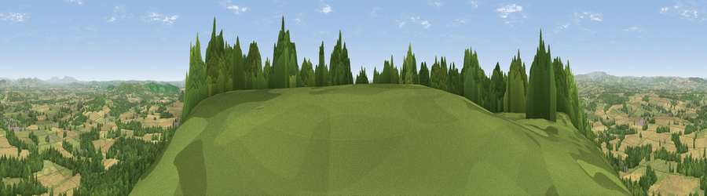

Viewpoint near Weobley
#2261 in England · top 6% of its area beats it · near WeobleyWhere it is
The exact computed spot (SO 40375 49275). Click the marker for map links.
The view, rendered

A 360° render of this exact spot computed from the terrain model, tree cover and land cover — summer colours, afternoon light, calibrated against photographs of famous viewpoints. Real trees, hedges and buildings will differ in detail.
The panorama
Grey silhouette: terrain skyline in each direction (720 bearings, Earth curvature and refraction included). Dashed green: skyline with trees (+15 m) and buildings (+8 m) as obstacles. Blue strip: how far the ground is visible on each bearing.
Where the view opens
Wedge length = distance to the farthest visible ground on that bearing (vegetation-aware). Rings at 10, 25 and 50 km.
What fills the view
36% grassland · 36% woodland · 28% cropland ·
Angular shares of the visible panorama (visual magnitude), not map area. Landscape diversity 0.49 (0–1 Shannon).
Key numbers
More beautiful places nearby
The staircase of upgrades: each row has a higher view potential than everything closer. Driving times are estimates from straight-line distance, calibrated against real road routing — check an actual route before setting out.
| Place | Direction | Drive | Score |
|---|---|---|---|
| Viewpoint near Weobley | WNW · 0 km | ~1 min | 79.7 |
| Merbach Hill | WSW · 11 km | ~21 min | 81.1 |
| Viewpoint near Craswall | SW · 20 km | ~34 min | 81.5 |
| Gatley Hill | NNE · 21 km | ~35 min | 82.6 |
| Garway Hill | S · 24 km | ~40 min | 84.6 |
| North Hill | E · 37 km | ~55 min | 86.8 |
| Worcestershire Beacon | E · 37 km | ~55 min | 87.1 |
| Viewpoint near West Quantoxhead | SSW · 110 km | ~135 min | 87.9 |
52.13854, -2.87262 · source: screening · position refined by local search. Computed location — check access rights before visiting.